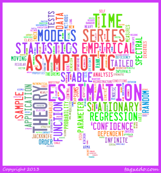

Welcome to My Site
My Research Interests
-
•数理統計学
-- 独立同分布と従属標本間の漸近的な差
-- 中心極限定理の成立条件
-- 一般化中心極限定理
-- 統計量に対する漸近展開
-
•時系列解析
-- 重い裾を持つ革新過程に対する統計解析
-- 時系列データに対する頑健的手法
-- 時系列モデル下の裾指数の推測
-- 非正則条件下の時系列解析
-
•金融工学
-- 最適ポートフォリオ理論
-- 多期間最適ポートフォリオ
(右はMy BibliographyによるTag Cloud.)
劉 言
Yan LIU
Department of Pure and Applied Mathematics,
Graduate School of Fundamental Science and Engineering, Waseda University
3-4-1 Okubo, Shinjuku-ku, Tokyo 169-8555, Japan
Education:
2013-- 早稲田大学院数学応用数理専攻 博士課程
2011--2013 早稲田大学院数学応用数理専攻 修士課程
2008--2011 早稲田大学応用数理学科 飛び級
Societies:
日本数学会
Language Skills:
日本語: ネイティブレベル
中国語: 母国語
英語: 流暢 (scored 815 on TOEIC, 2011)
フランス語: 挨拶レベル
イタリア語: 挨拶レベル
News:
9月26日 日本数学会秋季総合分科会にて「A new way to estimate tail index」を口頭発表する。

Research